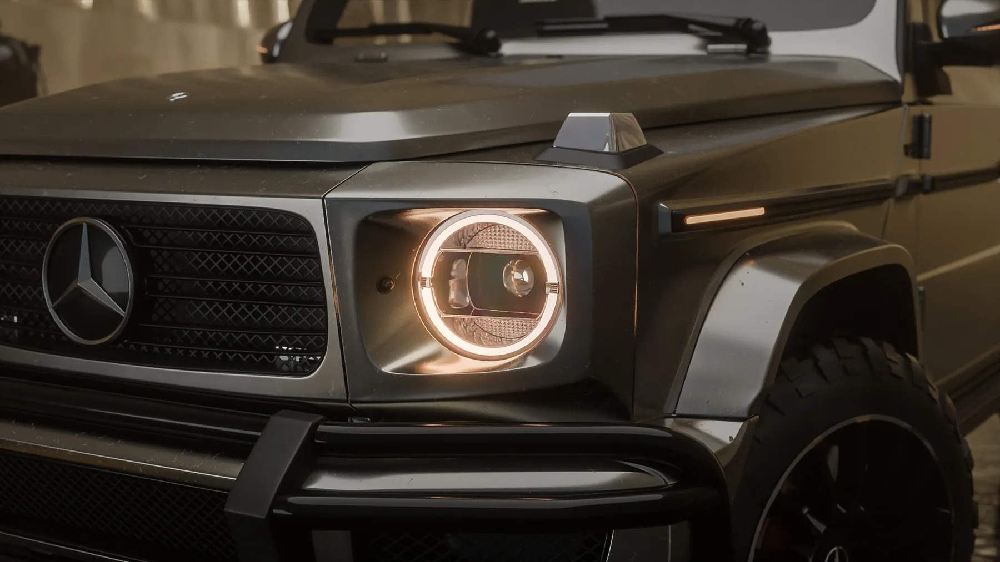

Học lighting trong Blender: 5 lỗi làm render rẻ tiền

Học lighting trong Blender không vướng ở plugin hay cấu hình máy. Khi có người gửi tôi một bài render và hỏi sao nhìn nó chưa đã, tám trên mười lần vấn đề nằm ở ánh sáng, không phải model, không phải vật liệu, và gần như không bao giờ do card đồ hoạ. Năm lỗi dưới đây gặp ở gần như mọi bài tự học, và cái nào cũng sửa được trong một buổi.
Bài này xếp theo đúng thứ tự tôi dùng khi chữa bài: xét nguồn sáng chính trước, rồi mới tới kích thước đèn, môi trường phản chiếu, vùng tối và cuối cùng là hậu kỳ. Sửa theo thứ tự đó thì mỗi lần sửa một thứ là hình khá lên thật, không phải vá chỗ nọ hỏng chỗ kia.
Học lighting trong Blender nên bắt đầu từ đâu
Phần lớn người mới học ánh sáng theo kiểu sưu tầm. Thấy một setup ba đèn trên YouTube thì dựng lại ba đèn, thấy một HDRI đẹp thì tải về dùng. Cách đó cho ra ảnh tạm được nhưng không tích luỹ, lần sau gặp vật thể khác là mò lại từ đầu.
Thứ tích luỹ được là ba câu hỏi, đặt theo đúng thứ tự này cho mọi cảnh:
- Nguồn chính đến từ hướng nào, và vì sao hướng đó hợp với hình khối của vật thể này?
- Bề mặt đang phản chiếu cái gì? Nếu câu trả lời là không có gì, đó đã là một lỗi.
- Vùng tối nằm ở đâu, và nó có đang giúp mắt người đọc được hình khối hay chỉ làm mất chi tiết?
Ba câu đó là toàn bộ nội dung của năm phần tiếp theo. Nếu bạn muốn biết ánh sáng nằm ở chỗ nào trong cả chuỗi kỹ năng, lộ trình tự học Blender đặt nó ở bước ba, sau modeling và vật liệu, và đó cũng là bước chiếm nhiều thời gian nhất trong bảy bước.
Lỗi 1: dùng đúng một HDRI rồi gọi đó là lighting
HDRI cho bạn ánh sáng môi trường tử tế trong ba mươi giây, nên rất dễ dừng lại ở đó. Vấn đề là HDRI chiếu đều từ mọi phía. Nó xoá đi cái bạn cần nhất: hướng. Không có hướng thì không có khối, không có khối thì vật thể trông như dán lên nền.
Sửa: giữ HDRI làm nền, hạ cường độ xuống còn khoảng một phần ba, rồi thêm một area light làm nguồn chính. Chỉ một đèn thôi. So sánh trước và sau, bạn sẽ thấy vật thể đột nhiên có trọng lượng.
Một cách kiểm tra nhanh: xoay HDRI đi chín mươi độ. Nếu ảnh gần như không đổi, nghĩa là bạn đang không có nguồn chính nào cả, chỉ có ánh sáng môi trường.
Lỗi 2: đèn quá nhỏ so với vật thể
Đây là lỗi âm thầm nhất. Nguồn sáng nhỏ tạo bóng đổ sắc cạnh và highlight nhỏ như đầu kim, thứ ngoài đời chỉ xuất hiện dưới nắng gắt hoặc đèn flash trần. Sản phẩm chụp studio luôn dùng nguồn lớn, vì nguồn lớn cho chuyển sáng mềm dọc theo bề mặt cong, và chính cái chuyển đó nói cho mắt người biết vật thể làm bằng gì.
Sửa: phóng area light của bạn to lên. To hơn nữa. Quy tắc thô: nguồn chính nên lớn ít nhất bằng vật thể, thường là gấp hai đến ba lần.
Nếu highlight trên bề mặt kim loại của bạn là một chấm nhỏ thay vì một vệt dài, đèn của bạn đang quá nhỏ.
Đi kèm kích thước là khoảng cách. Đèn lớn đặt xa sẽ hành xử như đèn nhỏ. Khi muốn chuyển sáng mềm hơn mà không đổi cường độ cảm nhận, kéo đèn lại gần và hạ power, thay vì phóng to mãi.
Lỗi 3: không có gì để phản chiếu
Kim loại và nhựa bóng không tự đẹp, chúng đẹp nhờ những gì xung quanh phản chiếu vào. Render một chiếc đồng hồ trong không gian trống, bề mặt của nó sẽ chỉ có màu xám chết. Studio thật luôn đầy vật thể: hắt sáng, cờ đen, tường, trần.
Sửa: đặt vài mặt phẳng lớn quanh vật thể, một trắng để hắt sáng, một đen để tạo mảng tối tương phản trên cạnh. Tắt bóng đổ của chúng nếu cần. Chi phí render gần như bằng không, khác biệt thì thấy ngay.

Lỗi 4: sáng đều tuyệt đối, không có vùng tối
Người mới sợ vùng tối, nên thêm fill light cho tới khi mọi ngóc ngách đều nhìn rõ. Kết quả là ảnh phẳng lì. Vùng tối không phải chỗ thiếu thông tin. Nó là chỗ mắt người nghỉ, và là thứ làm vùng sáng trở nên sáng.
Sửa: tắt hết đèn phụ, chỉ để nguồn chính. Nhìn kỹ. Rồi thêm lại từng đèn một, mỗi lần tự hỏi đèn này đang giải quyết vấn đề gì. Đèn nào không trả lời được thì xoá.
Một ví dụ đi ngược cả bốn lỗi trên: bộ hình Volvo S90 dựng và render bằng Blender, đèn lớn, có vật để phản chiếu, và vùng tối được giữ nguyên thay vì kéo sáng cho đều.
Lỗi 5: chỉnh màu ở hậu kỳ để cứu ánh sáng sai
Kéo contrast và saturation trong Compositor cho tới khi ảnh đỡ tệ là dấu hiệu bạn đang vá triệu chứng. Hậu kỳ nên là bước tinh chỉnh cuối, không phải bước cứu hộ. Nếu bạn phải kéo mạnh tay, quay lại sửa đèn, nhanh hơn nhiều.
Có một ngoại lệ đáng nói: khi ánh sáng đã đúng, hậu kỳ nhẹ lại rất hiệu quả, và đó cũng là lúc nên nghĩ tới thời gian render. Các cách cắt thời gian mà không làm hình xấu đi nằm trong bài render nhanh hơn trong Blender Cycles.
Ba kiểu setup đèn thường gặp và lúc nào nên dùng
Không có setup nào đúng cho mọi cảnh. Bảng dưới là ba kiểu tôi dùng nhiều nhất khi làm hình sản phẩm, kèm điểm bất lợi của từng kiểu, vì phần bất lợi mới là thứ quyết định nên chọn cái nào.
| Kiểu setup | Hợp với | Điểm bất lợi |
|---|---|---|
| Một đèn lớn, nhiều mặt hắt | Sản phẩm bóng, kim loại, kính | Cần kiên nhẫn dịch từng mặt hắt |
| Đèn chính và một đèn viền | Vật thể tối trên nền tối | Dễ thành viền giả nếu đèn viền quá mạnh |
| HDRI hạ cường độ và một area light | Cảnh ngoại cảnh, dựng nhanh | Khó kiểm soát phản chiếu chi tiết |
Khi chưa chắc, chọn dòng đầu. Một đèn lớn với ba bốn mặt hắt sạch sẽ hầu như luôn cho kết quả đọc được, và nó cũng là nền để hiểu hai kiểu còn lại. Đây cũng là cách chúng tôi dựng phần lớn shot trong dịch vụ render 3D sản phẩm.
Cách tự kiểm tra trong ba mươi giây
Đổi toàn bộ vật liệu trong cảnh sang một chất xám trung tính rồi render nháp. Nếu ảnh xám đó đã đọc được hình khối và có chiều sâu, ánh sáng của bạn ổn, phần còn lại là chuyện vật liệu. Nếu ảnh xám trông phẳng và nhạt, không vật liệu nào cứu được nó.
Bài kiểm tra này tôi dùng cho gần như mọi shot, và nó bắt lỗi sớm hơn bất kỳ thứ gì khác. Lý do nó hiệu quả: khi còn màu và texture, mắt bạn bị lừa bởi chi tiết đẹp và bỏ qua việc hình khối đang phẳng.
Làm thêm một bước nữa thì tốt: thu ảnh xám xuống bằng con tem rồi nhìn. Ở kích thước đó chỉ còn mảng sáng và mảng tối. Nếu không phân biệt được vật thể với nền, ánh sáng chưa xong, dù zoom vào vẫn thấy đẹp.
Danh sách kiểm tra trước khi render bản cuối
Chạy qua danh sách này trước mỗi bản render cuối. Thiếu quá hai dòng thì nên quay lại sửa đèn, đừng render, vì render một bản sai mất nhiều thời gian hơn sửa.
- Có một nguồn chính rõ ràng, nói được nó đến từ hướng nào.
- Nguồn chính lớn ít nhất bằng vật thể, thường là gấp hai tới ba lần.
- Mỗi đèn phụ trả lời được câu hỏi nó đang giải quyết vấn đề gì.
- Có ít nhất một mặt hắt trắng và một cờ đen quanh vật thể bóng.
- Highlight trên bề mặt kim loại là vệt có hình, không phải chấm.
- Vùng tối còn nguyên, không bị fill light kéo sáng cho đều.
- Ảnh xám đã đọc được hình khối trước khi gắn vật liệu thật.
- Hậu kỳ chỉ còn là tinh chỉnh nhẹ, không phải cứu hộ.
- Có một ảnh tham chiếu thật đặt cạnh để so, không dựng theo trí nhớ.
Lộ trình học lighting trong Blender trong tám tuần
Nếu bạn muốn một cách làm có thứ tự thay vì sửa lỗi lẻ, đây là khung tám tuần đủ để đi từ mò mẫm sang đặt đèn có lý do. Mỗi tuần một bài, làm xong mới sang tuần sau.
Hai tuần đầu chỉ dùng một đèn duy nhất, không HDRI, dựng lại ba vật thể đơn giản cho tới khi nói được vì sao đặt đèn ở đúng chỗ đó. Hai tuần tiếp thêm mặt hắt và cờ đen, làm việc với một vật thể kim loại. Hai tuần sau đó tập vùng tối: dựng lại cùng một shot theo ba phương án sáng khác nhau. Hai tuần cuối ghép vào quy trình thật, gồm cả hậu kỳ nhẹ và kiểm tra bằng ảnh xám.
Khung này cố tình không có phần học thêm phần mềm hay add-on mới. Phần khó của ánh sáng là thói quen đọc ảnh, và thói quen đó chỉ hình thành khi làm lại cùng một việc với điều kiện khác nhau. Bộ bảng tra cứu đi kèm nằm trong cẩm nang Blender, trong đó có checklist lighting và quy trình render dùng khi làm việc thật.
Năm lỗi trên đều sửa được một mình. Thứ khó tự sửa là thói quen đọc ảnh, và đó là phần một khoá học render có người nhận xét từng vòng làm tốt hơn hẳn video hướng dẫn. Nếu bạn muốn học cả khâu dựng hình trước đó, hai hệ trong trang khoá học 3D Blender đi theo đúng thứ tự modeling, vật liệu, rồi ánh sáng.
Hỏi đáp về học lighting trong Blender
Học lighting trong Blender mất bao lâu để dùng được?
Ước lượng từ các nhóm chúng tôi đã chữa bài, cần khoảng tám tới mười hai tuần làm đều để đặt đèn có lý do thay vì mò. Riêng việc sửa năm lỗi trong bài này thì nhanh hơn nhiều, thường chỉ một tới hai buổi là thấy khác.
Nên học lighting trong Cycles hay Eevee?
Học nguyên lý trong Cycles vì nó phản ứng gần với ánh sáng thật, sai là thấy ngay. Eevee dùng để xem nhanh và cho việc cần tốc độ. Nguyên lý đặt đèn giống nhau, chỉ khác cách xử lý phản chiếu và bóng đổ.
Có cần mua HDRI hoặc add-on lighting trả phí không?
Không cần, nhất là trong giai đoạn học. Năm lỗi phổ biến nhất đều sửa bằng area light và vài mặt phẳng hắt sáng có sẵn trong Blender. Add-on tiết kiệm thời gian khi đã biết mình muốn gì, chứ không dạy bạn muốn gì.
Máy yếu có học lighting được không?
Được. Lighting là khâu ít ngốn máy nhất nếu bạn làm việc với ảnh xám và render nháp ở độ phân giải thấp. Phần cần máy mạnh là bản render cuối, và đó là việc có thể để sau. Mức cấu hình hợp lý cho từng giai đoạn nằm trong bài cấu hình máy học Blender.
Render vẫn trông giả dù đã sửa hết năm lỗi, vấn đề ở đâu?
Thường là vật liệu hoặc bố cục, không phải đèn nữa. Làm bài kiểm tra ảnh xám ở trên: nếu ảnh xám đã có chiều sâu mà bản màu vẫn giả, lỗi nằm ở roughness và màu bề mặt.
Nếu bạn đang mắc ở một shot cụ thể, cứ gửi ảnh render kèm ảnh chụp màn hình phần đặt đèn. Chúng tôi xem và nói thẳng lỗi nào đang ăn nhiều nhất, kể cả khi câu trả lời là bố cục chứ không phải ánh sáng. Không cần đăng ký gì.
Đọc tiếp


Muốn được sửa bài trực tiếp?
Coaching 1:1 online, đồng hành trọn một năm. Để lại thông tin, tôi xem qua và tư vấn bạn nên bắt đầu từ đâu.
Đăng ký tư vấn